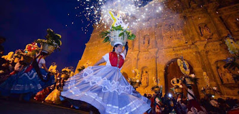
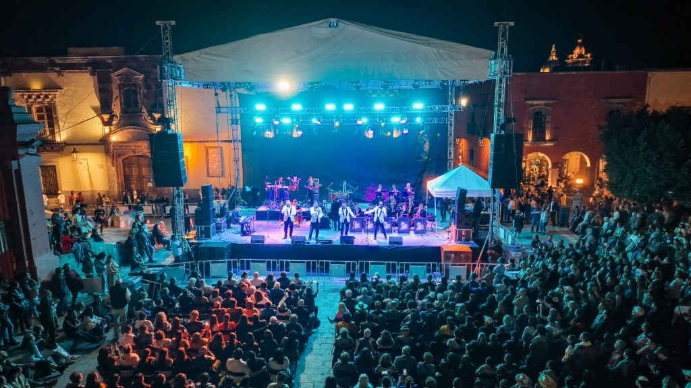
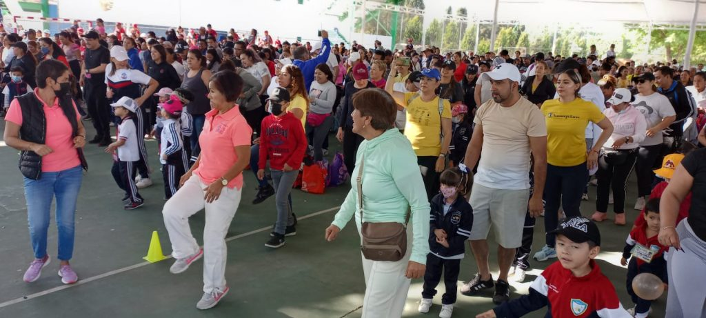

Cultura
Promovemos eventos tradicionales, artísticos y comunitarios.
Agenda local de cultura, música y tradición
Encuentra ferias, conciertos, exposiciones, eventos culturales y actividades familiares en diferentes municipios del estado.
Ver eventosSomos una agencia local dedicada a difundir eventos importantes de Chiapas, ayudando a visitantes y habitantes a encontrar actividades de interés. Tambien compartimos recomendaciones para disfrutar mejor cada experiencia.
Promovemos eventos tradicionales, artísticos y comunitarios.
Conciertos, festivales, exposiciones y actividades recreativas.
Información clara sobre fechas, horarios y lugares.

Vive celebraciones llenas de musica, gastronomia y color local.

Encuentra presentaciones para disfrutar con amigos y familia.

Consulta opciones para recorrer Chiapas y participar en comunidad.
Muy pronto agregaremos nuevos eventos, recomendaciones y actividades para todos los gustos.